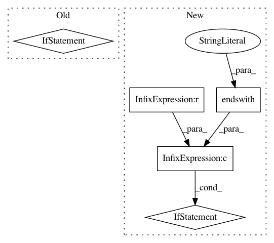

e4c330615d355c6bbcef72a4358411e5718f25d3,ilastik.py,,main,#,60
Before Change
parsed_args, workflow_cmdline_args = ilastik_main.parse_known_args()
// allow to start-up by double-clicking an ".ilp" file
if len(workflow_cmdline_args) == 1 and \
workflow_cmdline_args[0].endswith(".ilp") and \
parsed_args.project is None:
parsed_args.project = workflow_cmdline_args[0]
workflow_cmdline_args = []
hShell = ilastik_main.main(parsed_args, workflow_cmdline_args)
// in headless mode the headless shell is returned and its project manager still has an open project file
hShell.closeCurrentProject()
After Change
_clean_paths( ilastik_dir )
// Allow to start-up by double-clicking a project file.
if len(sys.argv) == 2 and sys.argv[1].endswith(".ilp"):
sys.argv.insert(1, "--project")
import ilastik_main
parsed_args, workflow_cmdline_args = ilastik_main.parse_known_args()
hShell = ilastik_main.main(parsed_args, workflow_cmdline_args)
In pattern: SUPERPATTERN
Frequency: 3
Non-data size: 5
Instances
Project Name: ilastik/ilastik
Commit Name: e4c330615d355c6bbcef72a4358411e5718f25d3
Time: 2019-01-07
Author: emilmelnikov@gmail.com
File Name: ilastik.py
Class Name:
Method Name: main
Project Name: scikit-learn/scikit-learn
Commit Name: 90dc61f239a19e072df1409a23440768331b7d0c
Time: 2020-07-31
Author: rth.yurchak@gmail.com
File Name: conftest.py
Class Name:
Method Name: pytest_collection_modifyitems
Project Name: google/language-resources
Commit Name: 45ef34b26b0ce8796fadc931770097ea5971561c
Time: 2016-06-30
Author: mjansche@google.com
File Name: my/extract_text.py
Class Name:
Method Name: main